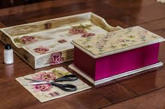
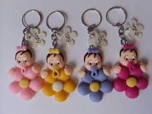
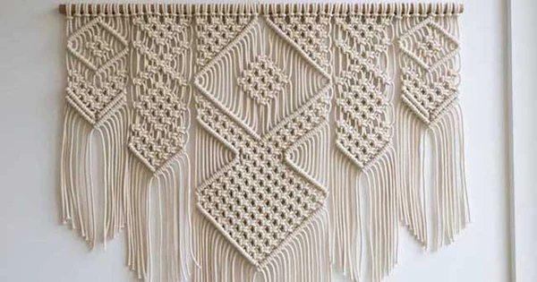
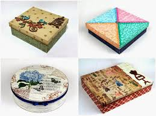

PRESERVAR A CULTURA E A TRADIÇÃO
Artesanato é a arte de criar objetos por meio da transformção da matéria-prima, usando as mãos como o principal instrumento de trabalho
As feramentas e equipamentos são sempres auxiliares, não se sobrepondo ao fazer manual
Tipos de trabalho Artesanal

Artesanato com a reciclagem
O artesenato com a reciclagem tem como uma das suas bases a criação... Ler mais

Sabonetes artesanais e cosméticos
No mercado cosméticos, os sabonetes artesanais se destacam, como ... Ler mais
Velas artesanais
As velas artesanais cumprem com um õptimo papel dentro desse mercado de artesanato.... Ler mais

Artesanato em decoupage
Uma das mais belas e cuidadosas técnicas de artesanato, é docoupage dá origem a muitos produtos chamativos... Ler mais

Artesanato em croche
O crochê é uma outra grande tradição brasileira repasados por gerações e mais gerações... Ler mais

Artesanato em biscuit
O biscuit é uma das matérias-primas de artesanato que tem mais ganhado espaço nos ultimos... Ler mais

Artesanato em fuxico
O fuxico é um tecido típico muito tradicional no brasil ele pode ser usado para dar... Ler mais

Artesanato em MDF
MDF é um material derivado da madeira que muito muito usado em personalização e ... Ler mais

Artesanato bordados
Os bordados trazem muita divercidade em suas criações. Basicamente, a técnica é feita com linhas.... Ler mais

Artesanato pintados à mão
Por fim, uma outra óptima pção são os produtos pintados a mão, a delicadeza ... Ler mais